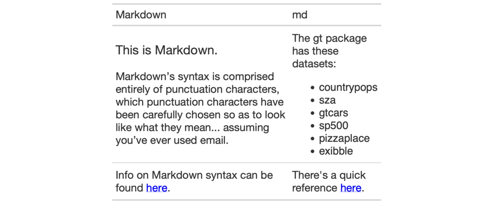

| fmt_markdown {gt} | R Documentation |
Any Markdown-formatted text in the incoming cells will be transformed to the
appropriate output type during render when using fmt_markdown().
fmt_markdown(data, columns, rows = everything())
data |
A table object that is created using the |
columns |
The columns to format. Can either be a series of column names
provided in |
rows |
Optional rows to format. Providing either |
Targeting of values is done through columns and additionally by rows (if
nothing is provided for rows then entire columns are selected). A number of
helper functions exist to make targeting more effective. Conditional
formatting is possible by providing a conditional expression to the rows
argument. See the Arguments section for more information on this.
An object of class gt_tbl.

3-8
Other Format Data:
data_color(),
fmt_currency(),
fmt_datetime(),
fmt_date(),
fmt_missing(),
fmt_number(),
fmt_passthrough(),
fmt_percent(),
fmt_scientific(),
fmt_time(),
fmt(),
text_transform()
# Create a few Markdown-based
# text snippets
text_1a <- "
### This is Markdown.
Markdown’s syntax is comprised entirely of
punctuation characters, which punctuation
characters have been carefully chosen so as
to look like what they mean... assuming
you’ve ever used email.
"
text_1b <- "
Info on Markdown syntax can be found
[here](https://daringfireball.net/projects/markdown/).
"
text_2a <- "
The **gt** package has these datasets:
- `countrypops`
- `sza`
- `gtcars`
- `sp500`
- `pizzaplace`
- `exibble`
"
text_2b <- "
There's a quick reference [here](https://commonmark.org/help/).
"
# Arrange the text snippets as a tibble
# using the `dplyr::tribble()` function;
# then, create a gt table and format
# all columns with `fmt_markdown()`
tab_1 <-
dplyr::tribble(
~Markdown, ~md,
text_1a, text_2a,
text_1b, text_2b,
) %>%
gt() %>%
fmt_markdown(columns = everything()) %>%
tab_options(table.width = px(400))